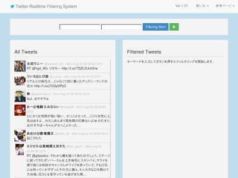
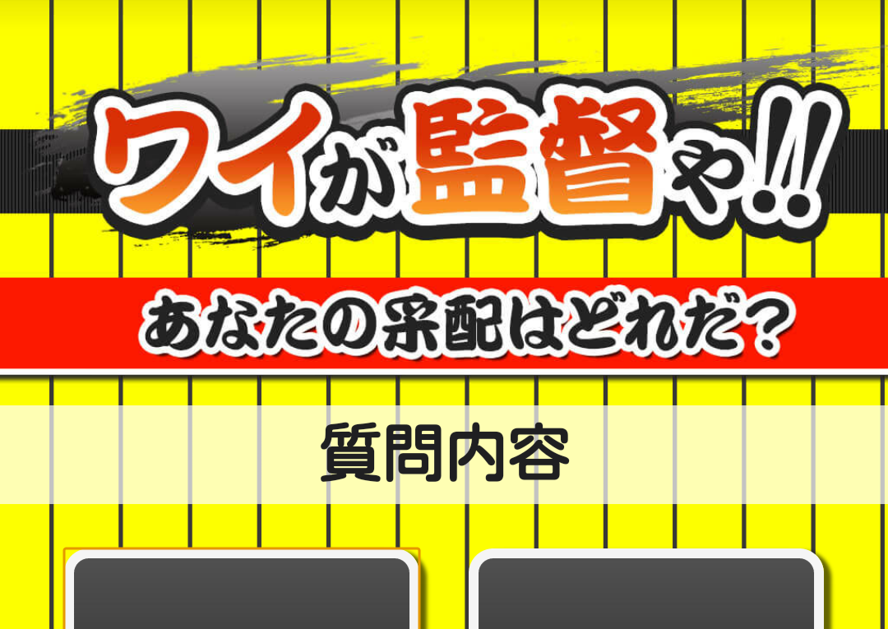
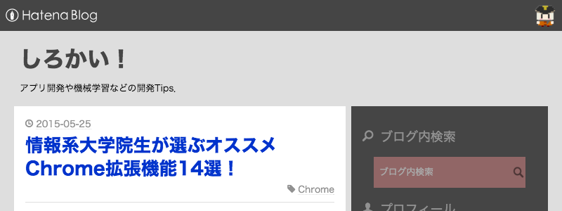

Products

ツイートをリアルタイムにフィルタリングするサービス。
あなたのツイートを予測します。

タイガースの采配に対するファンの意見を監督に伝えられるアプリ。
MBSハッカソンにてアプリのフロント部分の開発を担当。優秀賞受賞。
Publications
Journal Papers
- Shun Kawahara, Kazuhiro Seki, and Kuniaki Uehara. Detecting Vital Documents in Massive Data Streams. Open Journal of Web Technologies, Vol. 2, No. 1, pp. 16-26, 2015. pdf
Refereed Conference Papers
- Shun Kawahara, Kazuhiro Seki, Kuniaki Uehara. Detecting Vital Documents Using Negative Relevance Feedback in Distributed Realtime Computation Framework. In Proceedings of te 2015 Conference of the Pacific Association for Computational Linguistics (PACLING 2015), pp. 101-108, May 2015. pdf
Domestic Conference Papers / Workshop
- 川原 駿，関和広，上原邦昭．分散ストリーム処理基盤Stormと言語モデリングによる新情報を含む文書の検出．第7回データ工学と情報マネジメントに関するフォーラム（第13回日本データベース学会年大会）（DEIM2015）, E4-3, 7 pages, 2015年3月．学生プレゼンテーション賞受賞 pdf
- Shun Kawahara, Kazuhiro Seki, Kuniaki Uehara. K2U at TREC 2014 KBA Track. In Proceedings of the 23rd Text Retrieval Conference (TREC 2014), November 2014. pdf
Theses
- 川原 駿，関和広，上原邦昭．時系列テキストストリームからのオブジェクト間の関係抽出．2016年2月． pdf
- 川原 駿，関和広，上原邦昭．並列分散ストリームデータ処理基盤S4を用いたIncremental Rocchioによる文書フィルタリング．2014年2月． pdf
Skills
Python
Javascript
PHP
Java
Objective-C
Swift
Ruby
C
MySQL
HTML
CSS
Hadoop
Storm
CakePHP
Blog

素人開発Tips、略してしろかい！です。アプリ開発や機械学習系を中心に、IT関連の記事を書いています。「素人の方にも分かりやすいように」を心がけています。